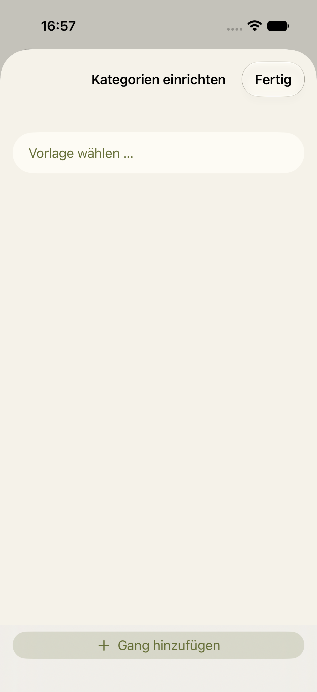
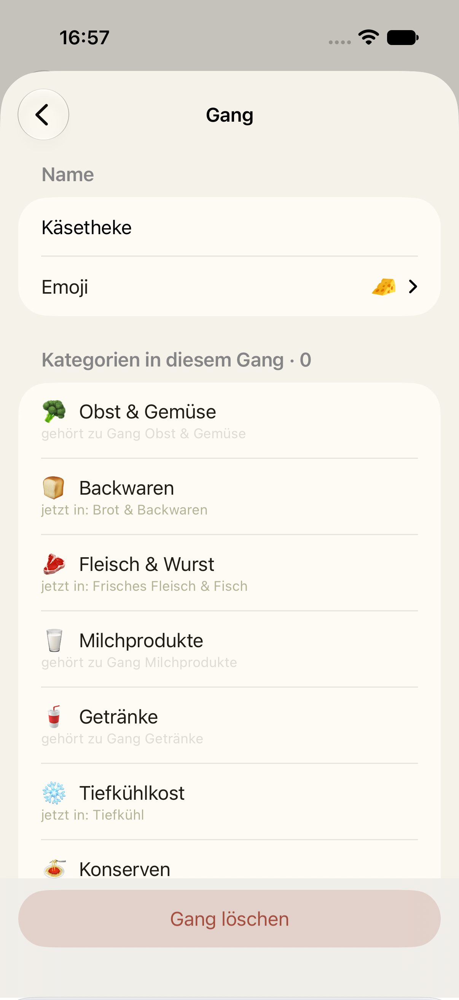
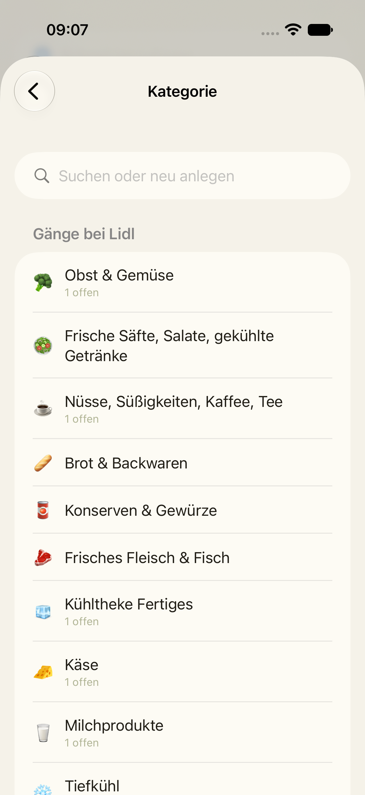
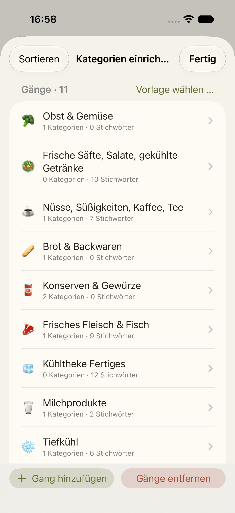

Der erste Teil ist in der App: Gänge anlegen, umbenennen, ordnen, Kategorien zuordnen, Lidl-Vorlage. Der zweite Teil bringt vier weitere Vorlagen, eigene Stichwörter je Gang, Umbenennen und Löschen direkt aus der Kategorie-Auswahl beim Artikel und die Übernahme deiner früheren eigenen Kategorien. Alles unten ist ein Entwurf in den Farben der App, je hell und dunkel, mit einer Alternative.
Heute öffnet „Vorlage wählen …“ ein Systemmenü mit nur einem Eintrag, „Lidl“. Neu ist ein eigenes Blatt mit fünf Vorlagen. Die vier Muster tragen „Vorschlag, bitte prüfen“, weil die Recherche nur die grobe Reihenfolge belegt. So war es im freigegebenen Entwurf von Teil 1 schon gezeigt. Wer eine Vorlage wählt, ersetzt die Gänge des Ladens. Sind schon Gänge da, fragt die App vorher nach, wie heute.

Systemmenü wie heute, mit fünf Einträgen. Der Hinweis steht als Text hinter dem Namen, weil das Menü keine Markierungen kennt. Kleiner im Bau, aber der Hinweis geht leicht unter.
Die Gänge folgen der Recherche (Aldi Süd, Edeka/Kaufland, dm, Hornbach). Standard-Kategorien stehen in Klammern, Stichwörter kursiv. Baumarkt-Kategorien sind in den drei Lebensmittel-Vorlagen ausgeblendet, wie bei Lidl. Was keinem Gang zugeordnet ist, landet unter „Sonstiges“.
| Discounter 🏷️ | Vollsortimenter 🏬 | Drogerie 🧴 | Baumarkt 🔨 |
|---|---|---|---|
| 1 🥦 Obst & Gemüse 2 🥩 Fleisch & Fisch fisch, lachs, hähnchen, bratwurst … 3 🥖 Backstation (Backwaren) 4 🧀 Wurst, Käse & Molkerei (Milchprodukte) käse, wurst, schinken, eier … 5 🧊 Kühlregal Fertiges tofu, hummus, salatbox … 6 🥫 Trockensortiment (Konserven, Gewürze & Backen, Snacks) kaffee, tee, nudeln, reis 7 ❄️ Tiefkühl 8 🥤 Getränke 9 🧴 Drogerie & Baby (8 Drogerie-Kategorien, Tierbedarf) 10 🛒 Aktionsware (Haushalt, Elektronik, Textilien …) |
1 🥦 Obst & Gemüse 2 🥖 Backwaren 3 🥩 Fleisch, Wurst & Fisch fisch, lachs … 4 🧀 Käse käse, gouda, feta … 5 🥛 Molkerei & Kühlung eier, margarine, tofu 6 🥫 Konserven & Nährmittel nudeln, reis, mehl, müsli 7 🍫 Süßwaren & Snacks kaffee, tee, schokolade 8 ❄️ Tiefkühl 9 🧴 Drogerie & Haushalt 10 🐾 Tierbedarf 11 🛒 Non-Food 12 🥤 Getränke |
1 💄 Kosmetik 2 💇 Haarpflege 3 🧴 Körperpflege 4 🦷 Zahnpflege 5 💊 Gesundheit (Medikamente) 6 🧻 Hygiene 7 👶 Baby 8 🧼 Haushalt & Reinigung 9 🐾 Tierbedarf 10 🌿 Lebensmittel (Snacks, Getränke, Konserven …) 11 🛒 Kasse & Geschenke (Schreibwaren, Spielzeug, Deko) |
1 🌷 Garten & Pflanzen 2 💡 Deko & Leuchten 3 🚿 Bad & Sanitär 4 🧱 Fliesen & Boden 5 🎨 Farben & Tapeten tapete, pinsel 6 🔧 Werkzeug & Maschinen 7 🔩 Eisenwaren & Befestigung dübel 8 🪵 Holz & Baustoffe |
Belegt sind nur die groben Abfolgen bei Aldi Süd, Kaufland und Hornbach. Drogerie ist aus Beschreibungen abgeleitet, daher der Hinweis „Vorschlag, bitte prüfen“.
Heute zeigt der Gang seine Stichwörter nur an. Neu: eine Zeile je Stichwort, Löschen per Wischen, darunter ein Feld „Stichwort hinzufügen“. Ein Stichwort trifft jedes Wort, das so endet: „käse“ trifft „Bergkäse“. Erlaubt sind einzelne Wörter ab drei Buchstaben. Steht dasselbe Stichwort schon in einem anderen Gang, nimmt die App es trotzdem an und sagt in einer Zeile, welcher Gang gewinnt.

Stichwörter als Wortwolke mit ✕ an jedem Wort. Kompakter bei vielen Wörtern, aber kleine Tippziele.
Beim Anlegen oder Bearbeiten eines Artikels zeigt die Auswahl die Gänge des Ladens. Neu: Nach links wischen zeigt „Bearbeiten“ (Name und Emoji) und „Löschen“. Löschen fragt vorher nach, weil die Artikel dieses Gangs danach unter „Sonstiges“ stehen. Beim letzten Gang heißt die Frage „Gänge entfernen?“, wie in der Einrichtung. So funktionieren eigene Kategorien in Läden ohne Gänge schon heute.

Kein Wischen, stattdessen unten ein Eintrag „Gänge bearbeiten …“, der die Einrichtung öffnet. Ein Weg weniger, aber man verlässt den Artikel.
Wer vor den Gängen eigene Kategorien angelegt hat (z. B. „Asia-Regal“), sieht sie im Laden mit Gängen heute nicht mehr. Neu steht in der Einrichtung ein Abschnitt „Eigene Kategorien von früher“, nur wenn es welche gibt. Ein Tipp auf „Übernehmen“ macht daraus einen Gang am Ende der Liste. Die Artikel, die du dieser Kategorie zugeordnet hattest, stehen danach sofort in diesem Gang. „Alle übernehmen“ macht das für alle auf einmal. Dazu steht in der Gang-Zeile jetzt „1 Kategorie“ statt „1 Kategorien“.

Beim Wählen einer Vorlage fragt die App einmal: „Eigene Kategorien anhängen?“. Kein eigener Abschnitt, aber nur ein Zeitpunkt und keine Auswahl einzelner Kategorien.
| Teil | Inhalt | Zeilen |
|---|---|---|
| 2b-1 | Vier Vorlagen mit eigenem Blatt, Stichwörter bearbeiten, „1 Kategorie“ in der Einzahl | ca. 540 |
| 2b-2 | Wischen in der Kategorie-Auswahl, frühere eigene Kategorien übernehmen, die vier vorgemerkten Oberflächentests aus Teil 1 | ca. 480 |
Kein neues Datenfeld, kein iCloud-Schritt. Geteilte Läden bleiben Durchgang 3.